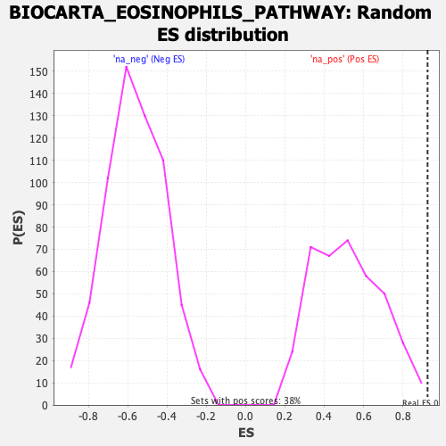

| | | Dataset | DE_genes2 |
| Phenotype | NoPhenotypeAvailable |
| Upregulated in class | na_pos |
| GeneSet | BIOCARTA_EOSINOPHILS_PATHWAY |
| Enrichment Score (ES) | 0.9259319 |
| Normalized Enrichment Score (NES) | 1.776349 |
| Nominal p-value | 0.005235602 |
| FDR q-value | 0.12945771 |
| FWER p-Value | 0.429 |
Table: GSEA Results Summary
 Fig 1: Enrichment plot: BIOCARTA_EOSINOPHILS_PATHWAY
Fig 1: Enrichment plot: BIOCARTA_EOSINOPHILS_PATHWAY
Profile of the Running ES Score & Positions of GeneSet Members on the Rank Ordered List

Fig 2: BIOCARTA_EOSINOPHILS_PATHWAY: Random ES distribution
Gene set null distribution of ES for BIOCARTA_EOSINOPHILS_PATHWAY